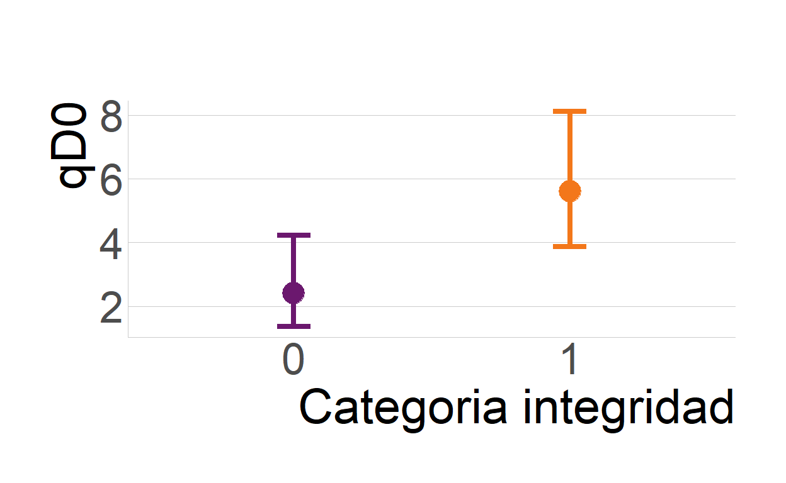

Librerías
library(iNEXT) # Interpolation and Extrapolation for Species Diversity
library(AICcmodavg) # Model Selection and Multimodel Inference Based on (Q)AIC(c)
library(ggeffects) # Create Tidy Data Frames of Marginal Effects for 'ggplot' from Model Outputs
library(DHARMa) # Residual Diagnostics for Hierarchical (Multi-Level / Mixed) Regression Models
library(performance) # Assessment of Regression Models Performance
library(patchwork) # The Composer of Plots
library(tidyverse) # Easily Install and Load the 'Tidyverse'
library(viridis) # Colorblind-Friendly Color Maps for R
library(hrbrthemes) # Additional Themes, Theme Components and Utilities for 'ggplot2'
library(ggpubr) # 'ggplot2' Based Publication Ready Plots
library(ggdist) # Visualizations of Distributions and Uncertainty
library(parameters) # Processing of Model ParametersPreparación datos
| 57 | 58 | 60 | 61 | 62 | 63 | 64 | 65 | 66 | |
|---|---|---|---|---|---|---|---|---|---|
| Peromyscus sp. | 11 | 3 | 0 | 1 | 2 | 28 | 11 | 1 | 7 |
| P. morfo 1 | 7 | 11 | 3 | 37 | 42 | 26 | 25 | 22 | 21 |
| P. morfo 2 | 7 | 2 | 3 | 0 | 0 | 15 | 0 | 8 | 9 |
| R. fulvescens | 0 | 0 | 0 | 1 | 0 | 0 | 7 | 1 | 3 |
| L. irroratus | 0 | 0 | 0 | 3 | 2 | 6 | 12 | 3 | 9 |
| P. morfo 3 | 0 | 0 | 0 | 0 | 2 | 0 | 0 | 13 | 2 |
| S. hispidus | 0 | 0 | 0 | 0 | 0 | 7 | 0 | 2 | 8 |
| C. parva | 0 | 0 | 0 | 0 | 0 | 1 | 0 | 0 | 0 |
Perfil de diversidad por nodo
Diversidad observada por nodo para los perfiles de qD0, qD1 y qD2.

Modelado
Modelamos la influencia de la integridad ecológica sobre la diversidad taxonómica de los pequeños mamíferos. La integridad se incorporo en los modelos a tres escalas, categóricas (integro/degradado) y por el valor de indice en pixeles de 250m y 1km.
Modelo de riqueza (q0)
Riqueza de especies
| Modnames | K | AICc | Delta_AICc | ModelLik | AICcWt | LL | Cum.Wt | |
|---|---|---|---|---|---|---|---|---|
| 2 | qD0 ~ Integridad | 2 | 43.11 | 0.00 | 1.00 | 0.79 | -18.70 | 0.79 |
| 1 | Nulo | 1 | 46.48 | 3.37 | 0.19 | 0.15 | -21.99 | 0.94 |
| 4 | qD0 ~ X1_km | 2 | 49.47 | 6.36 | 0.04 | 0.03 | -21.88 | 0.97 |
| 3 | qD0 ~ X250_m | 2 | 49.57 | 6.47 | 0.04 | 0.03 | -21.93 | 1.00 |
Parameter | Log-Mean | SE | 95% CI | z | p
-----------------------------------------------------------
(Intercept) | 0.88 | 0.29 | [0.25, 1.39] | 3.03 | 0.002
Integridad | 0.85 | 0.35 | [0.20, 1.56] | 2.46 | 0.014Gráfico modelo qD0

Modelo de especies igualmente abundantes (q1)
Especies igualmente abundantes
| Modnames | K | AICc | Delta_AICc | ModelLik | AICcWt | LL | Cum.Wt | |
|---|---|---|---|---|---|---|---|---|
| 2 | qD1 ~ Integridad | 3 | 41.31 | 0.00 | 1.00 | 0.68 | -15.65 | 0.68 |
| 1 | Nulo | 2 | 43.28 | 1.98 | 0.37 | 0.25 | -18.78 | 0.93 |
| 3 | qD1 ~ X250_m | 3 | 47.21 | 5.91 | 0.05 | 0.04 | -18.61 | 0.97 |
| 4 | qD1 ~ X1_km | 3 | 47.48 | 6.17 | 0.05 | 0.03 | -18.74 | 1.00 |
Parameter | Coefficient | SE | 95% CI | t(8) | p
--------------------------------------------------------------
(Intercept) | 1.77 | 0.58 | [0.43, 3.10] | 3.05 | 0.016
Integridad | 2.16 | 0.82 | [0.27, 4.05] | 2.64 | 0.030
Modelo de especies dominantes (q2)
| Modnames | K | AICc | Delta_AICc | ModelLik | AICcWt | LL | Cum.Wt | |
|---|---|---|---|---|---|---|---|---|
| 2 | qD2 ~ Integridad | 3 | 39.37 | 0.00 | 1.00 | 0.54 | -14.69 | 0.54 |
| 1 | Nulo | 2 | 40.17 | 0.80 | 0.67 | 0.36 | -17.23 | 0.89 |
| 3 | qD2 ~ X250_m | 3 | 43.67 | 4.29 | 0.12 | 0.06 | -16.83 | 0.96 |
| 4 | qD2 ~ X1_km | 3 | 44.44 | 5.06 | 0.08 | 0.04 | -17.22 | 1.00 |
Parameter | Coefficient | SE | 95% CI | t(8) | p
---------------------------------------------------------------
(Intercept) | 1.61 | 0.53 | [ 0.40, 2.82] | 3.06 | 0.016
Integridad | 1.71 | 0.74 | [ 0.00, 3.43] | 2.30 | 0.050
Bondad de ajuste de los modelos
Test de glm qD0

DHARMa nonparametric dispersion test via sd of residuals
fitted vs. simulated
data: simulationOutput
dispersion = 0.49567, p-value = 0.304
alternative hypothesis: two.sided# Overdispersion test
dispersion ratio = 0.685
Pearson's Chi-Squared = 5.476
p-value = 0.706Test lm qD1

Test lm qD2

Bibliografía
(Avenant 2011; Andreasen et al. 2001; Bogoni, Peres, and Ferraz 2020; Bradford et al. 1998; Carignan and Villard 2002; Dirzo et al. 2014; Culot et al. 2013; Lacher et al. 2019a, 2019b; Bengtsson 1998; Equihua et al. 2014; Horváth, March, and Wolf 2001; Morales-Díaz et al. 2019; Müller, Hoffmann-Kroll, and Wiggering 2000)
Adicional
Web hecha con el paquete distill Estilo basado en Teaching in Production